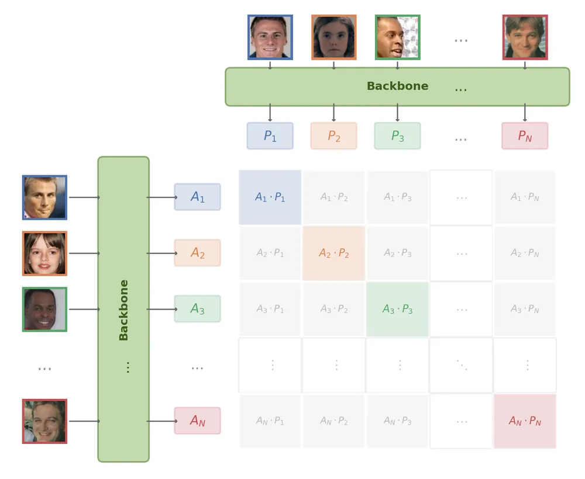

How far can contrastive loss get us in face verification?

Can CLIP's contrastive loss alone learn to tell faces apart?
Most modern face verification systems are trained as classifiers — and then the classifier is thrown away. ArcFace learns a softmax head over identity classes, enforces angular margins, and discards it at inference. InfoNCE offers a more direct path: optimize embedding similarity itself, the same objective behind CLIP. This project puts them head-to-head on the same backbone and data.
Results
All models trained on MS1M-ArcFace (85K identities), evaluated with 10-fold cross-validation at FAR@0.001.
| Experiment | LFW | CFP-FF | CFP-FP |
|---|---|---|---|
| ArcFace (ResNet-50) | 99.72% | 99.80% | 95.84% |
| InfoNCE (ResNet-50) | 99.55% | 99.59% | 87.89% |
InfoNCE nearly matches ArcFace on frontal benchmarks but drops 8 points on CFP-FP (pose variation). I surmise this is largely a supervision asymmetry. Both losses are softmax cross-entropy — the difference is what goes in the denominator:
In ArcFace, each sample is pulled toward one positive class center and pushed away from all other 85,741 centers — fixed and always present. In InfoNCE, each sample is pulled toward one positive and pushed away from 1,448 other samples in the mini-batch — these change every iteration. CLIP uses 32,768-size batches; this suggests that increasing batch size may help narrow InfoNCE’s performance gap on harder benchmarks such as CFP-FP.
However, InfoNCE’s lack of fixed class centers may be a structural advantage for face verification. ArcFace embeds all faces on a hypersphere populated by 85,741 learned class centers — at inference, unseen faces tend to snap to the nearest center rather than occupying their own region of the space (see embedding space analysis below). InfoNCE has no such centers: the embedding space is shaped entirely by pairwise similarity, which may allow unseen identities to distribute more freely.
Side experiments
Does adding contrastive loss help ArcFace?
Hybrid loss (ArcFace + 0.5 × InfoNCE) yields no improvement — contrastive regularization adds nothing over ArcFace’s margin alone. Config: configs/arc-nce.yaml
| Experiment | LFW | CFP-FF | CFP-FP |
|---|---|---|---|
| ArcFace (ResNet-50) | 99.72% | 99.80% | 95.84% |
| InfoNCE (ResNet-50) | 99.55% | 99.59% | 87.89% |
| ArcFace + InfoNCE (ResNet-50) | 99.72% | 99.73% | 95.30% |
Do foundation models transfer to faces?
Frozen CLIP, DINOv2, and I-JEPA perform poorly for identity discrimination (52–68% LFW), indicating that generic visual pretraining does not yield face-discriminative embeddings. Config: configs/clip.yaml, configs/dino.yaml, configs/jepa.yaml
| Experiment | LFW | CFP-FF | CFP-FP |
|---|---|---|---|
| ArcFace (ResNet-50) | 99.72% | 99.80% | 95.84% |
| InfoNCE (ResNet-50) | 99.55% | 99.59% | 87.89% |
| ArcFace + InfoNCE (ResNet-50) | 99.72% | 99.73% | 95.30% |
| CLIP ViT-B/32 (frozen) | 68.35% | 69.01% | 56.69% |
| DINOv2 ViT-B/14 (frozen) | 57.85% | 51.39% | 50.43% |
| I-JEPA ViT-H/14 (frozen) | 52.57% | 51.64% | 50.13% |
LoRA adaptation of foundation models
LoRA (rank=8, <1% trainable params) with InfoNCE recovers foundation models to 89–96% LFW. DINOv2 leads on CFP-FF (96.81%), but all remain well below ResNet-50 trained from scratch. Config: configs/clip-lora.yaml, configs/dino-lora.yaml, configs/jepa-lora.yaml
| Experiment | LFW | CFP-FF | CFP-FP |
|---|---|---|---|
| ArcFace (ResNet-50) | 99.72% | 99.80% | 95.84% |
| InfoNCE (ResNet-50) | 99.55% | 99.59% | 87.89% |
| ArcFace + InfoNCE (ResNet-50) | 99.72% | 99.73% | 95.30% |
| CLIP ViT-B/32 (frozen) | 68.35% | 69.01% | 56.69% |
| DINOv2 ViT-B/14 (frozen) | 57.85% | 51.39% | 50.43% |
| I-JEPA ViT-H/14 (frozen) | 52.57% | 51.64% | 50.13% |
| CLIP ViT-B/32 + LoRA | 96.08% | 89.79% | 72.24% |
| DINOv2 ViT-B/14 + LoRA | 94.78% | 96.81% | 78.50% |
| I-JEPA ViT-H/14 + LoRA | 89.12% | 89.57% | 72.73% |
Embedding space analysis
I wondered — ArcFace trains a classifier over 85K identities and discards it at inference. How does it generalize to unseen faces?
ArcFace’s final layer is a matrix of 85,741 L2-normalized class centers. During training, each embedding is pushed toward its own class center on the hypersphere. A well-trained model maps every training image close to one of these centers. But when an unseen identity is fed through the frozen model, will it also land close to a class center?
To test this, I took the positive pairs from LFW, CFP-FF, and CFP-FP and measured two things: (a) the cosine similarity between the two images in a pair, and (b) the cosine similarity between each image and its nearest class center. These results assume MS1M-ArcFace and the evaluation datasets are identity-disjoint.
| Loss | Benchmark | Pair sim | Nearest center sim (A) | Nearest center sim (B) | % A closer to center | % B closer to center |
|---|---|---|---|---|---|---|
| ArcFace | LFW | 0.714 | 0.630 | 0.631 | 43.3% | 44.8% |
| ArcFace | CFP-FF | 0.711 | 0.725 | 0.727 | 65.6% | 66.4% |
| ArcFace | CFP-FP | 0.515 | 0.726 | 0.573 | 90.2% | 77.1% |
| ArcFace+InfoNCE | LFW | 0.776 | 0.676 | 0.678 | 33.9% | 35.3% |
| ArcFace+InfoNCE | CFP-FF | 0.780 | 0.767 | 0.769 | 53.3% | 53.1% |
| ArcFace+InfoNCE | CFP-FP | 0.589 | 0.769 | 0.617 | 89.7% | 65.2% |
On LFW (easy, frontal), positive pairs are closer to each other than to any class center — generalization works as expected. On CFP-FP (pose variation), the picture flips: the frontal face snaps to a nearby class center (0.73) while the profile face drifts further (0.57), and pair similarity drops to 0.52. 90% of frontal faces are closer to a training class center than to their profile pair partner. The model leans on the class-center geometry learned during training, which breaks under pose variation. Script: scripts/analyze_center_vs_positive.py
Background
Face verification determines whether two face images belong to the same person — a pairwise similarity problem.
FaceNet (Schroff et al., CVPR 2015) was the first to frame it this way: triplet loss maps faces to a compact Euclidean space, and the embedding is used directly at inference. However, triplet mining is slow and unstable at scale.
Margin-based losses — SphereFace (Liu et al., CVPR 2017), CosFace (Wang et al., CVPR 2018), ArcFace (Deng et al., CVPR 2019) — reframe verification as multi-class classification during training. A softmax head over identity classes is added, angular margins enforce inter-class separation, and the classification head is discarded at inference. This indirect approach became the dominant paradigm.
CoReFace (Song & Wang, Pattern Recognition 2024) is the closest prior work. It adds contrastive regularization on top of margin-based classification to align training with pairwise evaluation. However, contrastive learning serves as a regularizer — the classification head remains the primary signal. This project asks: what happens when contrastive loss is the only signal?
Future work
I invite you, dear reader, to pick up where this project leaves off:
Embedding space geometry. Do InfoNCE embeddings truly avoid the class-center snapping observed with ArcFace? Do unseen identities distribute more freely across the hypersphere, or does a different kind of clustering emerge? For ArcFace, do both images in a positive pair snap to the same nearest center or to different ones — and how does this correlate with verification accuracy?
Larger batch sizes. The CFP-FP gap may largely be a supervision asymmetry. Scaling batch size is the most natural next step — just increase batch_size in configs/nce.yaml and retrain.
Dataset overlap. The embedding space analysis assumes MS1M-ArcFace and the evaluation benchmarks are identity-disjoint. Verifying this — and quantifying any overlap — is needed to validate those results.
Experimental setting
- Training data: MS1M-ArcFace, 85,741 identities, 80/20 train/val split
- Hardware: 2× H100 GPUs (ComputeCanada),
acceleratedistributed, FP16 mixed precision - Evaluation: LFW, CFP-FF, CFP-FP — 10-fold cross-validation at FAR@0.001
- Losses: All embeddings L2-normalized. ArcFace: scale , margin , denominator over all 85,741 class centers. InfoNCE: temperature , denominator over batch negatives (1,448 for ResNet, up to 4,098 for CLIP-LoRA)
- ResNet-50 experiments: SGD (momentum 0.9, WD 5e-4), LR 0.1, 5 warmup epochs, 30 total epochs, batch size 1,350–1,450
- LoRA experiments: rank=8, α=8 on FFN layers. SGD LR 0.001, 15 epochs, batch size varies (120–4,100 depending on model size)
- Frozen baselines: zero-shot evaluation only (no training)
All results reproducible via config files in configs/:
accelerate launch train.py --config <config_name>Setup
conda env create -f environment.yaml
conda activate face-verification
cp .env.example .env # fill in your dataset paths and HPC credentialsData
MS1M-ArcFace (training)
- Download from Kaggle: https://www.kaggle.com/datasets/jadesag3/ms1m-arcface/data
- Extract — you need
train.recandtrain.idx(RecordIO format). - Set
MS1M_DIRin.envto the extracted folder.
train.py automatically converts RecordIO to LMDB on first run.
LFW (evaluation)
No manual download needed. train.py auto-downloads LFW from figshare, runs RetinaFace alignment, and caches the result as data/lfw_10fold_original_retinaface.lmdb.
CFP (evaluation)
Download from Kaggle: https://www.kaggle.com/datasets/chinafax/cfpw-dataset and extract to data/cfp-dataset/. LMDBs are prepared automatically on first run.
Run
accelerate launch train.py --config arcSLURM cluster
sbatch hpc/_requirements_installation.sh # one-time env setup
cd hpc && bash _download_models.sh # pre-download weights (login node, has internet)
sbatch hpc/arc.sh # submit training jobAcknowledgments
This research was enabled in part by support provided by the Digital Research Alliance of Canada (alliancecan.ca).